Votre site est tout beau, tout propre, prêt à envahir le web... (Si vous ne savez pas comment créer votre site web, rendez-vous ici.) Vous l'annoncez à votre meilleur(e) ami(e), celui (celle) qui vous soutient depuis toujours, et LA ! :waw:
Il (elle) sort son smartphone, et vous dit : "Il est peut-être cool ton site, mais depuis un mobile c'est la misère !". Et bien c'est le moment d'y remédier, non ? ;)
J'ai l'honneur de vous annoncer que vous êtes sur la bonne page !
Les navigateurs mobiles sont, à l'instar de ceux pour ordinateurs, tous très différents. Cela ne va pas nous empêcher de trouver un moyen pour qu'ils aient tous le même comportement ! Vous verrez dans ce chapitre les bases nécessaires à la création d'un site web pour mobile.
Pour faire un site mobile, il y a deux méthodes différentes, que je vais essayer de vous présenter ici. Chacune a ses avantages et inconvénients, et vous pourrez choisir laquelle vous mettrez en oeuvre. Enfin, "vous pourrez choisir"... C'est une façon de parler, car de toute façon, je vous présenterai la deuxième méthode dans ce tutoriel : c'est la seule que je connaisse ! :p
Le fonctionnement est simple : votre site détecte si le visiteur a un mobile, et redirige vers la version correspondante le cas échéant. Vous aurez par contre deux fois plus de code à gérer (sur votre serveur), mais vous aurez le contrôle total sur ce qui se trouve sur la page.
Le désavantage de cette méthode, si je puis dire, c'est que la redirection vers la version mobile est compliquée à mettre en place et ne marche pas forcément. Mais bon, vous allez voir, l'autre méthode non plus n'est pas parfaite. :)
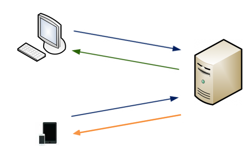
La page envoyée au visiteur dépend de l'appareil utilisé.
Le visiteur demande la page.
Si le visiteur a un ordinateur, le serveur renvoie la page pour ordinateur.
Si le visiteur a un téléphone, le serveur renvoie la page pour mobile.
Utiliser les nouvelles possibilités offertes par CSS3
CSS3 est, comme vous le savez peut-être, une nouvelle norme du langage CSS. Elle n'est malheureusement pas supportée sur tous les navigateurs (en particulier les vieux IE). Je vous rassure, les navigateurs mobiles, en particulier ceux pour iPhone et Android, gèrent très bien ce que nous allons utiliser.
La technique qui nous est utile ici s'appelle les media queries, les questions sur les médias (le terme anglais est quand même plus joli ;) ). En gros, on va pouvoir, avec une condition, cibler uniquement les navigateurs avec une largeur plus petite que ou plus grande que. Vous pouvez utiliser des conditions sur d'autres choses que la largeur du navigateur, comme le type d'affichage (écran, mobile, impression...), l'orientation (portrait ou paysage), et plein d'autres choses encore ! Mais la largeur est quand même ce qui est le mieux géré, et le plus simple à tester aussi : vous n'avez (normalement) pas besoin de tester votre site sur un vrai smartphone, redimensionner la fenêtre de votre navigateur suffit.
Ouais, ça a l'air cool ton truc de media queries ! T'es sûr que tu ne nous caches pas des défauts ?
Vous avez raison, cette technique n'est pas parfaite. Vous pouvez cacher des éléments inutiles en fonction de la largeur, mais ils seront téléchargés par le visiteur, ce qui entraîne un chargement de données dont on peut se passer et donc un ralentissement de la page. Vous devrez aussi faire preuve d'ingéniosité pour ne pas afficher d'images trop lourdes sur un mobile. Rassurez-vous quand même, en WiFi ou en 3G (ce qui est assez courant quand même :p ), vos visiteurs ne devraient pas trop ressentir de ralentissement.
Avec cette technique, vous n'aurez pas à gérer deux fois votre code sur votre serveur, mais la page HTML générée sera (un peu) plus lourde, et donc plus lent pour le visiteur.
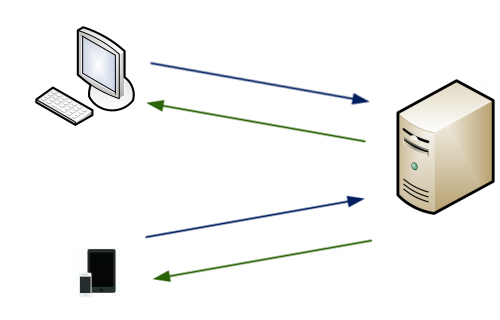
Schéma du fonctionnement de la méthode dite "Responsive design"
Le visiteur demande la page.
Le serveur ne se préoccupe pas de savoir si le visiteur possède un mobile ou non et renvoie toujours la même page. L'adaptation du design est fait par l'appareil du visiteur.
En résumé
Avec la méthode du sous-domaine, votre code sur le serveur sera plus chargé, mais le visiteur aura une page qui se charge plus vite.
En utilisant les media queries, vous n'aurez qu'une seule page à créer sur votre serveur, mais la page envoyée au visiteur sera plus lourde.
Retenez quand même que les différences, avec les nouvelles technologies, ne se font pas beaucoup sentir non plus. ;)
Bon, je vais arrêter de vous faire attendre et vous dire (Enfin !) comment ça marche !
Ce qu'il faut savoir, c'est que les navigateurs mobiles vont afficher votre page avec une largeur par défaut, qui sera environ celle d'un ordinateur (980px pour Safari Mobile, mais cette valeur peut changer d'un navigateur à un autre). Ainsi, votre site est affiché en tout petit sur un mobile !
Pour éviter ça, il suffit de dire au navigateur mobile qu'on veut que la largeur du site respecte celle du mobile, tout simplement. :)
Tu sais que t'es marrant toi, des fois, hein ? Je fais ça comment, moi ?
Dis comme ça, ça peut paraître compliqué, mais vous allez voir, rien n'est plus simple. ;) Il suffit de rajouter une seule balise dans votre code HTML pour que le navigateur mobile affiche votre site avec une largeur correcte. Voyez plutôt :
<head>
<!-- Des choses -->
<meta name="viewport" content="width=device-width"/>
<!-- Encore des choses -->
</head>
Vous pouvez comprendre cette balise comme : "La largeur de mon site correspondra à la largeur de l'appareil." Vous pouvez également utiliser la constante device-height avec la propriété height, mais cette utilisation est beaucoup moins courante.
Ainsi, vous pouvez déjà regarder votre site en rajoutant cette balise : qu'est-ce qui a changé ?
Euh, oui, bonne question ! Moi, je n'ai pas de smartphone, je ne peux pas voir ce que ça a changé ! :(
Et bien, pour cela, il existe des émulateurs. Comme sur ordinateur, les navigateurs sont nombreux pour mobile, vous pouvez facilement trouver un émulateur quelconque en effectuant une recherche. Il existe, entre autre, un émulateur pour Opéra Mobile, fourni par la société. Sur le web, vous pouvez en trouver d'autres, comme celui-ci (iPhone) qui marche plutôt bien. PS 1 : N'hésitez pas à m'envoyer des liens que vous souhaitez voir figurer ici, si cela est mérité je les afficherais ! PS 2 : Si vous utilisez un émulateur web, il faut envoyer votre site en ligne via FTP pour pouvoir y accéder.
Revenons à nos moutons ! Qu'est-ce que cette balise a concrètement changé ?
Pour que tout le monde puisse suivre, je vais tester l'effet de cette balise sur une "vraie" page web, et vous montrer les images. Je vais prendre la page d'accueil du Site du Zéro (version 3 :p ), mais vu que je fais les tests en local, certains éléments du design ont été enlevés, n'y prêtez pas attention. J'ai respecté la taille originale de Safari Mobile, à savoir 320px de largeur.
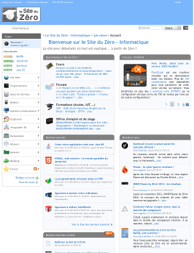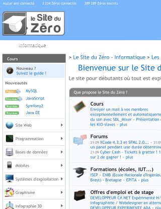
Le site original depuis Safari Mobile (à gauche) et le site avec la balise meta depuis Safari Mobile (à droite).
Et oui, ça a juste changé le zoom ! Et encore, le zoom est aléatoire, parce qu'en fait, ça a changé la largeur du site. Or, si on regarde le CSS, on peut voir ceci :
body {
min-width: 1000px;
}
Alors on va modifier ça aussi ! Notre but est d'avoir une largeur du site qui soit juste bien pour être affichée sur un mobile.
On va donc mettre 320px. Pourquoi 320 ? C'est une valeur plutôt standard et qui fonctionne très bien sur la plupart des navigateurs. Je vous ferai un récapitulatif des valeurs standards dans le prochain chapitre. Bref, on teste :
Le site avec la balise meta et avec la largeur minimale fixée à 320px
Et là, ça a déjà changé ! Ce qui est intéressant, c'est que le texte est lisible immédiatement et que les éléments qui le peuvent prennent le moins de place possible (Regardez le titre par exemple : un seul mot par ligne pour dépasser le moins possible). Mais bon, c'est pas bien folichon (j'ai réussi à le caser, ce mot !) : comme vous le voyez, le design est tout cassé. D'où mon conseil : prévoyez votre design pour mobile dès le commencement ! Vous n'aurez pas un problème d'adaptation qui peut se révéler beaucoup trop long à réaliser. Travail que l'on ne va pas faire sur ce site d'ailleurs. ;)
Bon, vous me croyez maintenant ? Cette balise est la clef pour votre design, la suite se fait grâce aux media queries.
Mais avant de toucher au CSS, on va voir quelques options bien utiles !
Le zoom initial, minimal et maximal
Le zoom initial
Je vous avais dit précédemment que le zoom au chargement de la page était assez aléatoire. En fait, si votre site est bien fait, le zoom s'adaptera comme vous le voulez, c'est-à-dire qu'il n'y en aura pas. Le zoom sera donc de 1.
Toutefois, vous pouvez préciser au navigateur quel doit être le zoom initial, selon la syntaxe :
Notez que j'écris à chaque fois la valeur de la largeur avec device-width, c'est l'utilisation la plus courante de cette balise. Vous pourrez, une fois que je vous les aurais montrées, ajouter autant d'options que vous voulez grâce à cette balise.
Le zoom minimal
Si le visiteur souhaite afficher votre site en plus petit pour quelque raison que ce soit, vous allez pouvoir définir combien de fois il pourra le faire. En pratique, cette option n'est pas très utile, car le zoom minimal est de toute façon défini par la largeur de votre site. Mais si vous en avez besoin, voici comment l'utiliser :
A noter que la valeur 0.25 est celle par défaut du navigateur Safari Mobile.
Le zoom maximal
Comme pour le zoom minimal, vous pouvez également indiquer un zoom maximal. Le navigateur aura également un comportement par défaut : si vous zoomez trop, et que le texte n'est plus lisible, le navigateur dézoomera automatiquement (en tout cas sur les navigateurs récents). Voici comment l'utiliser :
A noter que la valeur 5.0 est celle par défaut du navigateur Safari Mobile.
Cette option est, à mon avis, un peu plus utile que le zoom minimal. En effet, lorsque votre visiteur clique sur une zone de texte, le navigateur peut zoomer automatiquement. Définir un zoom maximal, à 1.0 par exemple, permet d'empêcher ce comportement.
Un autre avantage non négligeable de cette option est celui-ci : si vous définissez le zoom maximal à 1.0, lors du passage de paysage à portrait et inversement, la largeur va s'adapter. Dans le cas contraire, en mode paysage, le site s'affichera sur la même largeur qu'en mode portrait et le visiteur devra dézoomer pour bénéficier d'un affichage optimal.
Le zoom de l'utilisateur
Une solution un peu plus radicale est de désactiver complètement le zoom de l'utilisateur. Ainsi, combiné avec le zoom initial, la page sera toujours affichée de la même manière.
N'abusez tout de même pas de cette option, s'il y a un petit défaut sur votre site le visiteur pourra être gêné. Néanmoins, c'est également une manière d'empêcher un zoom lorsque votre visiteur veut entrer du texte dans un <input>.
Par contre, en changeant l'orientation de portrait à paysage, cette option gardera la même largeur, ce qui fera que le texte apparaît plus grand. Combiné avec le zoom maximal par contre, la largeur pourra s'adapter à la nouvelle orientation. Oui c'est compliqué ! Mais bon, des fois, il faut faire avec ! :p
Il n'y a pas vraiment d'autres choses à expliquer, mais utilisez toutes ces options avec parcimonie : je recommande de ne les utiliser que si c'est véritablement nécessaire. En fait, un visiteur de votre site pourrait être gêné par votre design et vouloir modifier vos paramètres en zoomant ou dézoomant, cependant les options que vous avez mises peuvent l'en empêcher. Retenez bien ceci : Il ne faut pas que le visiteur soit agacé par le comportement de votre site ! Ou encore : Le visiteur est roi ! Cela vaut également pour les liens en target="_blank", qui ont le don d'énerver particulièrement certaines personnes (dont moi).
Une petite particularité pour les écrans particulièrement grands
Les écrans particulièrement grands, ou, devrai-je dire, les smartphones sous Android principalement, acceptent une nouvelle option. Et oui, encore une !
Celle-ci est en rapport avec les écrans plutôt grands, comme le laisse indiquer mon titre, mais je vais vous expliquer pourquoi. En fait, les pixels de certains écrans sont particulièrement petits. En utilisant la balise <meta name="viewport">, les pixels de votre site vont être affichés par plusieurs pixels sur l'écran du portable.
Tout ça pour vous dire que, avec l'option que je vais vous montrer, un pixel de votre site pourra de nouveau ne représenter qu'un seul pixel sur le mobile.
Pour simplifier, tout ce que vous avez à retenir, c'est que votre texte sera affiché en plus petit, voyez vous-même :
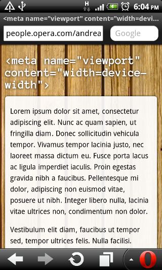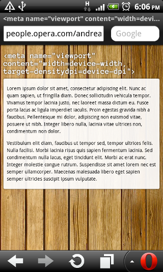
Images tirées du site d'Opéra dédié aux développeurs Voici ce qu'il vous faut écrire pour obtenir ce résultat :
J'ai une bonne nouvelle pour vous : à la fin de ce chapitre, vous serez déjà capables d'avoir un site accessible depuis mobile ! La suite sera juste des approfondissements.
Ce ne sera pas une trop grosse épreuve, faites-moi confiance. ;)
Si votre design est bien fait, l'utilisateur ne devrait pas avoir à scroller (c'est-à-dire à faire défiler) horizontalement votre page.
En CSS, on va donc se débrouiller pour que notre site ne dépasse pas une largeur minimale que nous avons fixée.
Les media queries peuvent être utilisées de deux façons différentes : une fois directement dans le CSS, et l'autre depuis la balise <link> de votre page HTML qui inclut votre feuille de style.
L'avantage de cette première méthode est qu'un visiteur avec un appareil ne correspondant pas à la requête ne téléchargera pas ce dont il n'a pas besoin. C'est donc un peu plus rapide pour lui. Et pour votre serveur, cela évite de la bande passante inutile.
En CSS, il faut englober tout le code que vous destinez aux mobiles dans un bloc, comme ceci :
@media votre requete ici {
/* Le code pour les mobiles ici */
}
Le code pour mobile est essentiellement là pour réduire les marges, revoir les positions des différents éléments, masquer d'autres éléments non désirés sur mobile, augmenter la taille du texte si nécessaire, en somme, adapter le design pour une plus petite largeur. :p
Valeurs standards
Pour adapter votre design, il va falloir prendre en compte la taille réduite de l'écran de votre visiteur. Mais vous ne savez peut-être pas à partir de quelle largeur un appareil peut être considéré comme un mobile, une tablette, etc.
Je vous propose le tableau suivant :
Appareils
Largeurs (en pixels)
Condition généralement utilisée
Smartphones
320 à 480
(max-width: 480px)
De smartphones à tablettes
481 à 767
(max-width: 767px)
Tablettes à petits écrans
768 à 979
(min-width: 768px) and (max-width: 979px)
Ordinateurs
980 à 1199
-
Écrans larges
1200 et plus
(min-width: 1200px)
A noter que les propriétés des tablettes s'appliquent également aux mobiles avec les conditions que je vous ai montrées. Si vous ne souhaitez pas ce comportement, combinez votre requête avec and et min-width !
Vous n'êtes bien sûr pas obligés de faire de grandes modifications pour chaque catégorie exposée ici ! Vérifiez tout de même que votre site s'affiche correctement en le redimensionnant.
Gérer les éléments problématiques
Certains éléments méritent d'ailleurs qu'on leur accorde un peu plus d'attention, ils sont parfois négligés ou mal gérés.
Images, iframes, tableaux et autres...
Les éléments que je viens de citer sont ceux qui ont le plus de chance de dépasser les 320 pixels que l'on veut pour largeur. Une solution simple, mais pas parfaite, pour empêcher ces éléments de déborder est une simple déclaration en CSS, que voici :
Cette liste peut bien sûr être complétée ou réduite en fonction de vos besoins.
Mais je dois vous dire que cette petite astuce n'est pas infaillible. En effet, ici, vous définissez la largeur intérieure d'un élément, or si vous lui ajoutez une marge intérieure ou une bordure, la largeur effective de l'élément va être plus grande que la largeur de votre page.
Quoi ? Mais c'est l'arnaque ! Je demande une largeur maximale de 100% mais elle peut être plus grande que ça ?
Pour vous répondre correctement, laissez-moi vous montrer cette image :
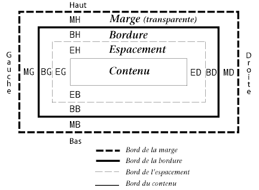
Le modèle de boîtes du W3C Source de l'image Ainsi, quand vous définissez la propriété max-width: 100%; à un élément, vous définissez la largeur maximale de ce qui est marqué "Contenu" sur l'image. Si vous ajoutez une bordure de 1 pixel, la largeur de votre élément sera de 100% + 2 pixels !
Pour éviter un tel comportement, ne mettez ni un padding ni une bordure aux éléments comme les images. Pour d'autres blocs, je vous propose ceci :
<div class="conteneur">
<div class="mabalise">
<!-- Du contenu -->
</div>
</div>
Ensuite, fixez la largeur en pourcent à votre .conteneur, sans marge intérieure ni bordure, et définissez par contre votre bordure et marge intérieure à .mabalise. .mabalise étant une balise de type block, elle occupera toute la largeur disponible, soit la largeur du conteneur (en pourcentage) moins le padding et la bordure que vous définissez en pixels. Autrement dit, le comportement que l'on voulait ! Cela ne vaut pas seulement pour le design sur mobile, bien entendu. :)
Ah ? On me signale dans l'oreillette qu'il y a une manière d'obtenir, avec une seule balise HTML, le comportement que l'on veut. Il faut lui appliquer la propriété box-sizing, qui peut prendre les valeurs suivantes : content-box (par défaut) et border-box. Cette dernière valeur permet d'inclure le padding et la bordure dans la largeur (et hauteur) de l'élément, c'est-à-dire que leur largeur ne vont pas s'ajouter au reste, soit de nouveau le comportement que l'on voulait ! C'est une propriété récente, mais vous pouvez l'utiliser avec les préfixes -moz- et -webkit- (merci à m@tteo78 pour l'info).
Vous apprendrez ici à "choisir" des médias : tel type d'écran aura cette propriété, un autre aura celle-là... Tout ceci n'aura presque pas de secrets pour vous ! Je dis "presque", car on ne sait jamais ce qu'une norme encore en développement peut nous cacher...
Le type de média
Ce choix est déjà disponible depuis la norme CSS2, mais il est possible que vous soyez passés à côté. Vous pouvez spécifier à quel type de média votre feuille de style va s'appliquer, nous verrons un peu plus loin comment procéder. Vous avez le choix entre les valeurs suivantes :
Média
Concerne
all
Tous les médias. C'est la valeur par défaut.
braille
Les appareils brailles.
embossed
Les imprimeries en braille.
handheld
Les appareils mobiles (avec petits écrans et/ou une bande passante limitée).
print
Les documents imprimés (et leurs visualisations).
projection
Les projecteurs et tout autre type de projection.
screen
Les écrans d'ordinateur avec couleurs.
speech
Les synthétiseurs de parole.
tty
Les appareils à police fixe (généralement avec des capacités d'affichage limitées).
tv
Les téléviseurs.
En théorie, c'est génial ! Pour cibler un certain type de média, il suffit de trouver le bon nom, et le tour est joué. Malheureusement, ce n'est que de la théorie : on cite souvent l'exemple de Safari Mobile qui se considère comme un screen, contrairement à ce qu'on aurait pu attendre.
Pour remédier à cela, la norme CSS3 introduit de nouvelles façons de cibler des média. C'est ce que nous allons voir.
Les fonctionnalités
Au lieu de laisser choisir les appareils comment ils se définissent, CSS3 propose aux développeurs de cibler les médias en fonction de leurs capacités physiques. Voici toutes les propriétés que vous pouvez tester :
Propriété
Valeur
Description
width (min/max)
<Longueur>
Largeur de l'écran
height (min/max)
<Longueur>
Hauteur de l'écran
device-width (min/max)
<Longueur>
Largeur de l'appareil
device-height (min/max)
<Longueur>
Hauteur de l'appareil
orientation
portrait ou landscape
Orientation de l'écran
aspect-ratio (min/max)
<Fraction>
Rapport largeur/hauteur
device-aspect-ratio (min/max)
<Fraction>
Rapport largeur/hauteur de l'appareil
color (min/max)
<Entier positif>
Nombre de bits par couleur
color-index (min/max)
<Entier positif>
Couleurs dans une table
monochrome (min/max)
<Entier positif>
Niveaux de gris (bits/pixel)
resolution (min/max)
En dpi ou dpcm : points par pouce/centimètre
Densité de pixels
scan
progressive ou interlace
Processus de balayage d'un téléviseur
grid
-
Appareil grille ou bitmap
Ces fonctionnalités seront à entourer de parenthèses lorsque vous ferez vos choix. Les longueurs utilisent des unités classiques (px, em). Faites également attention aux incohérences : vous ne pouvez pas combiner des propriétés visuelles au média speech par exemple.
Même si certaines propriétés peuvent paraître assez tordues, d'autres peuvent se révéler extrêmement utiles, comme la largeur. C'est presque exclusivement grâce à cette dernière que nous allons adapter notre design.
Quelle largeur ? Il y a la "simple" et celle de l'appareil, je prends laquelle ?
Et bien, il faut que vous connaissiez les différences pour faire ce choix !
La largeur de l'appareil, soit device-width , ne s'appliquera que pour les appareils mobiles. En redimensionnant votre fenêtre d'ordinateur, la feuille de style avec cette condition ne sera jamais prise en compte. Mais sur un appareil mobile, même si la largeur de l'appareil sera inférieure à 480 pixels, la page sera tout de même affichée sur une largeur plus grande.
La solution est d'utiliser la balise meta vue dans le chapitre précédent, et de la combiner avec device-width. Seulement, vous laissez de côté les possesseurs de petits écrans d'ordinateur... Je vous conseille donc de vous rabattre sur la propriété de largeur "normale".
Les opérateurs logiques
L'opérateur and
Parfois, une seule condition ne suffit pas et vous voudrez affiner votre choix pour obtenir ce que vous voulez.
L'opérateur and permet de répondre à votre attente : les deux (ou plus) propriétés doivent toutes être correctes pour que la feuille de style soit affichée.
@media screen and (max-width: 480px){
/* Ici du code s'appliquant aux écrans de moins de 480 pixels de large */
}
Vous pouvez noter que le type d'écran s'écrit sans parenthèses et qu'un espace est présent avant et après le and. Faites bien attention à cela. ;)
L'opérateur not
Afin d'affiner encore votre requête, vous pouvez exclure certains appareils avec l'opérateur not, comme son nom l'indique. Vous devez le placer au début de votre requête, et son résultat sera inversé.
@media not (orientation: landscape) and (min-width: 480px){
/* Ici votre code pour un affichage qui n'est pas en paysage et plus large que 480 pixels.
Trois cas sur quatre vont donc appliquer les propriétés :
- Paysage et moins large que 480px ;
- Portrait et moins large que 480px ;
- Portrait et plus large que 480px.
*/
}
L'opérateur only
L'opérateur only se place également au début de votre syntaxe, mais sert cette fois à exclure les anciens navigateurs ne supportant pas l'usage des media queries. Vous ne pouvez pas combiner les opérateurs not et only dans la même requête.
Si vous voulez prendre en compte plusieurs appareils qui n'ont pas de propriétés communes, vous pouvez écrire plusieurs media queries à la suite en les séparant par des virgules. Vous pouvez utiliser les opérateurs not et only à chaque requête, donc après chaque virgule.
Comme vous le voyez, les possibilités offertes par CSS3 sont extrêmement nombreuses, mais de là à trouver une utilité concrète pour chacune, il y a un pas à faire ! :p
Tout ce qui a été dit dans ces deux premiers chapitres est peut-être très abstrait pour vous, vous ne voyez pas comment on peut l'appliquer sur un "vrai" site web.
Vous savez déjà ce qu'il faut faire pour avoir un site web mobile. Maintenant, rien ne vous arrête si vous voulez adapter tout de suite votre site, mais j'aimerais à présent que vous vous exerciez avant de partir dans le vrai monde cruel. :p
Après ce TP, vous aurez vu en pratique comment on peut obtenir un site fait pour mobile. Au final, vous verrez que ce n'était pas si compliqué ! ;)
De plus, vous pourrez peut-être avoir besoin d'une autre image, mais je n'en dis pas plus :
Votre objectif
Et bien, vous le connaissez déjà : faire en sorte qu'une page s'affiche correctement pour un mobile. De multiples difficultés vous attendent, toutes plus retords les unes que les autres... Amusez-vous bien ! :pirate: (Notez qu'à l'heure où j'écris ces lignes, je n'ai pas encore fait le TP, donc je n'en ai aucune idée. ^^ )
Comment procéder ?
N'oubliez jamais, vous devez toujours procéder avec méthode. Prenez du papier et un crayon, reprenez l'allure du site que vous devez adapter, et posez-vous ces quelques questions (liste non exhaustive !) :
Ce bloc-là est trop large, comment je vais faire pour qu'il soit plus petit ?
Ici, deux blocs sont côtes à côtes, donc un des deux devra passer sous l'autre. Mais lequel ?
Ce "truc" est là uniquement pour faire joli. Est-ce que j'en ai encore besoin pour un mobile ?
99.9 % du temps que vous allez mettre pour réaliser ce TP va être du temps que vous allez passer sur du CSS. En effet, n'oubliez quand même pas la balise <meta name="viewport"/>, ce serait bête. :p Mais vous pouvez bien sûr faire de minimes changements dans le code HTML si c'est plus simple pour vous.
Et enfin, une bonne nouvelle : Le code HTML créé par M@teo21 est vraiment bien structuré, ce sera d'autant plus facile pour vous de l'adapter ! (Tous en chœur : "Merci M@teo21 !") Je peux vous dire que pour mon premier site, qui n'était pas très bien formé, j'ai eu un mal fou à l'adapter pour mobile. C'est dire si la conception HTML de départ est fondamentale !
À vous de jouer !
Il ne vous reste plus qu'à prendre du papier et un crayon, décider ce que vous allez faire (les fameuses questions à se poser !), et ensuite mettre ça en pratique avec du CSS !
Un dernier petit conseil : ne vous affolez surtout pas si quelque chose ne fonctionne pas du tout comme prévu ! Cela peut être une faute de frappe, une propriété donnée à une mauvaise balise, mais tout ça est heureusement facile à corriger. Utilisez les outils pour développeur de votre navigateur pour déterminer ce qui ne va pas, et surtout, prenez votre temps ! Vous n'allez pas forcément réussir du premier coup.
Je ne vais pas vous donner tout un bloc de code dès le départ. Je vais essayer de vous guider dans cette correction, de sorte que ceux qui ne sont pas arrivés à réaliser ce TP puissent au moins comprendre la démarche à suivre.
Bien entendu, la méthode que je vous présente n'est qu'une solution parmi une infinité ! Si vous avez fait autrement, mais que votre design vous plaît, il n'y a aucune raison de considérer mon code comme meilleur.
Sur ce, place à la correction !
Bien commencer
Sans rien toucher au code de M@teo21, avec Safari Mobile, vous obtenez ce rendu :
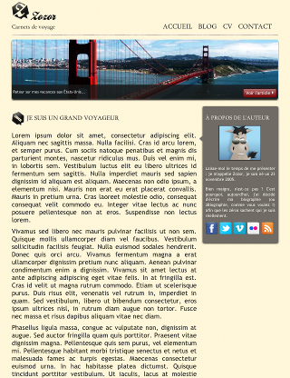
Maintenant, on rajoute la balise <meta> pour pouvoir, par la suite, utilisez les media queries :
Vous pouvez utiliser l'option initial-scale=1 temporairement, afin d'avoir le bon zoom dès le départ.
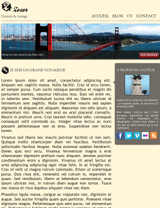
Certaines marges ont été rétrécies, et c'est tout ce que l'on peut observer. En fait, comme au chapitre précédent, dans le CSS, une largeur minimale est définie, ce qui empêche le navigateur d'avoir la largeur qu'il souhaite. Pour cela, on va tout simplement enlever la largeur fixe du site ainsi que des marges créées automatiquement par les navigateurs, et définir une largeur maximale et minimale :
Notez que la ligne de départ est celle du fichier que je change en même temps que vous, et pas la ligne du fichier de départ. Cela va surtout changer par la suite.
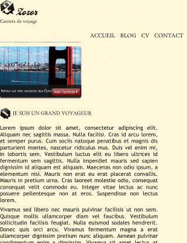
On peut remarquer plusieurs choses intéressantes. Tous les éléments qui ont une valeur fixe gardent cette valeur et empêchent de nouveau le navigateur d'avoir la largeur qu'il veut. Ici, on voit que le menu et le texte sont trop larges, et on va donc les réduire avec les media queries. Mais avant ça, on va se débrouiller pour que le "À propos de l'auteur" puisse être à droite de l'écran lorsqu'on redimensionne la fenêtre.
"À propos de l'auteur"
Pourquoi on s'occupe de ce bloc avant les autres ?
Parce que j'ai envie ! :p De toute façon, tout devra être fait, l'ordre n'a absolument pas d'importance dans notre cas.
Pour que cet élément se place à droite sans que l'on ne définisse de largeur fixe, on va appliquer quelques styles comme ceci :
aside
{
position: absolute;
top: 0;
right: 0;
/* ... */
}
/* Afin de positionner le <aside> par rapport à la <section> : */
section
{
position: relative;
}
On obtient sur un écran d'ordinateur un design très proche de celui de départ et sur mobile on voit ceci :
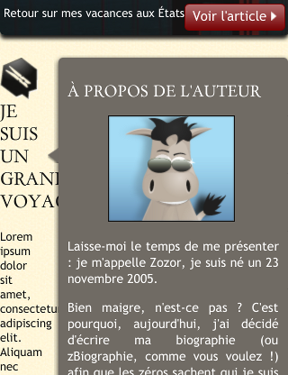
Or, comme vous vous en doutez, ce n'est pas vraiment ce que l'on veut. :p
On va donc positionner le <aside> au bas de la section à partir d'une certaine valeur avec une condition. Pour cela, on va "tatonner" pour savoir jusqu'à quelle valeur on veut encore le aside à droite. Pour ma part, j'ai choisi la valeur 700px :
@media (max-width: 700px){
aside
{
top: 100%;
}
article
{
margin-right: 0;
margin-bottom: 463px;
/* Pour laisser la place au bloc, sinon il se positionne SUR le pied de page
Sachant que 463px est la hauteur du <aside>.
Si vous voulez mettre des marges en plus, augmentez cette valeur */
}
}
Tu as mis top: 100%;. Pourquoi on ne peut pas mettre bottom: 0; tout simplement ?
Ah, bonne question ! En fait, la propriété top positionne le haut de votre élément, tandis que bottom positionne le bas. Ainsi, en écrivant top: 100%;, on place le haut de notre élément à 100% de la hauteur de l'élément de référence (la section), c'est-à-dire en bas de cet élément de référence, mais si on avait mis bottom: 0;, le bas de notre élément serait au bas de la section et les deux éléments se chevaucheraient.
Ainsi, avec une largeur de 680px (j'ai redimensionné ma fenêtre), on obtient ceci :
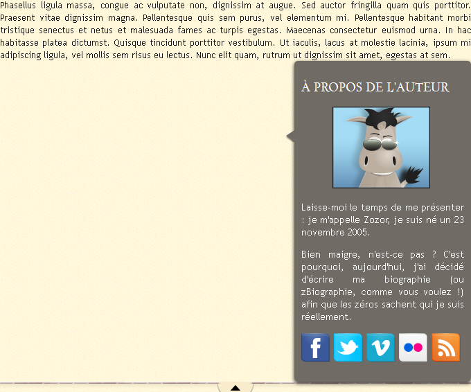
Afin de centrer notre aside, j'ai effectué ces modifications :
@media (max-width: 700px){
aside
{
top:100%;
left: 50%; /* On place la gauche de notre élément au mileu de la <section> */
margin-left: -127.5px; /* Et on décale notre élément de la moitié de sa largeur vers la gauche */
}
article
{
margin-right: 0;
margin-bottom: 470px;
padding-bottom: 10px;
}
}
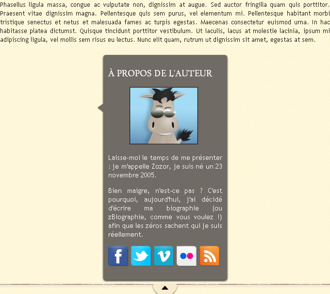
Ainsi, ce bloc est bien positionné. Il ne reste plus qu'à changer la flèche, et je vous l'ai retournée pour que vous n'ayez pas à le faire vous-même, rappelez-vous !
Le menu
On s'attaque maintenant au menu qui a une largeur fixe. On enlève donc la largeur fixe :
/* De plus, j'ai rajouté ceci : */
header
{
position: relative; /* Même chose que tout à l'heure :
on veut positionner le <nav> par rapport au <header> */
}
En redimensionnant la fenêtre, on se rend compte qu'à partir d'environ 600 pixels, le menu est trop large pour tenir sur la même ligne que le titre principal.
Comme il est en position absolue, il est sorti du flux, c'est-à-dire que l'élément n'est plus affiché à la suite des autres (Regardez le site sans le CSS : les éléments sont les uns en dessous des autres). Comme il n'a plus assez de place, il se mélange au titre principal. On va donc le remettre dans le flux :
@media (max-width: 600px){
nav li
{
display: block;
padding-bottom: 5px;
}
nav
{
text-align: left;
position: static; /* La valeur par défaut */
padding-bottom: 5px;
}
nav ul
{
margin-top: 0;
padding-left: 10px;
}
}
On a une présentation plutôt pas mal du menu sur petit écran.
La bannière
La bannière est assez difficile à adapter à un design extensible. Comme je vous l'ai expliqué au chapitre précédent, on a un problème avec la largeur : On veut une largeur de 100%, mais on veut également des marges intérieures. On va donc rajouter une balise, et vu qu'on a du texte à l'intérieur, on modifie la page comme ceci :
<div id="banniere_image">
<div id="banniere_description">
<p>
Retour sur mes vacances aux États-Unis...
<a href="#" class="bouton_rouge">Voir l'article <img src="images/flecheblanchedroite.png" alt="" /></a>
</p>
</div>
</div>
Le texte est un peu trop collé au bas de la bannière, je vous propose d'appliquer ces styles pour améliorer le rendu :
#banniere_description
{
position: absolute;
bottom: 0;
border-radius: 0px 0px 5px 5px;
width: 100%;
height: 40px; /* Une hauteur qui me paraît plus qu'acceptable */
/*padding-top: 15px;
padding-left: 4px;*/
background-color: rgb(24,24,24); /* Pour les anciens navigateurs */
background-color: rgba(24,24,24,0.8);
color: white;
font-size: 0.8em;
}
#banniere_description>p
{
padding-left:4px;
}
C'est un grand moment ! Maintenant, on a réussi à faire que tous les éléments aient au maximum une largeur de 320px.
Au lieu de positionner le bouton rouge à droite du paragraphe et de lui donner une marge négative, on va utiliser une méthode un peu différente. On commence par sortir le lien du paragraphe que l'on vient de créer.
<div id="banniere_image">
<div id="banniere_description">
<p>
Retour sur mes vacances aux États-Unis...
</p>
<a href="#" class="bouton_rouge">Voir l'article <img src="images/flecheblanchedroite.png" alt="" /></a>
</div>
</div>
Pour que le texte aille à la ligne avant d'arriver sous le bouton rouge, j'ai ajouté une marge interne :
La taille de notre #banniere_description est fixe, et le texte est trop collé au bas. J'ai donc remplacé la hauteur de 40 pixels par : min-height: 40px;.
Il ne reste plus qu'à placer le bouton à mi-hauteur :
Et voilà la bannière présentable avec n'importe quelle dimension !
Le pied de page
On approche de la fin ! Il ne reste plus que le pied de page à faire. Voici à quoi il ressemble sans que l'on ne fasse rien :
Je verrai bien mettre ces trois catégories, "Tweet", "Photos" et "Amis" les unes en dessous des autres. Pour cela, rien de plus simple ! La largeur est définie en pourcentage dans le code original (autour de 30% pour chacun des trois éléments). On va donc écrire :
Vous aurez remarqué que le design que je vous propose peut encore être amélioré (comme tout, me direz-vous !). De plus, les modifications apportées ont raboté quelques marges, et même si ce n'est pas fondamental, certains d'entre vous peuvent trouver cela gênant. À vous de les rajouter ! Je vous montre une impression écran de ce que j'ai fait, au cas où vous n'auriez pas d'idée :
Ma version finale de ce site
Pour un site, habituellement, vous pourrez créer une version tablette : une version mobile en un peu plus grand, pensée pour du tactile. Ici, ce n'est pas vraiment la peine, mais vous pouvez par exemple mettre le <aside> plus large que haut en fonction de la largeur.
Vous pouvez aussi faire une version "grand écran", avec une largeur de plus de 1200px de large par exemple. Au lieu de mettre simplement des marges vides sur le côté, mettez-y votre menu en position: fixed;, pour simplifier encore plus l'utilisation de votre site !
Ainsi, votre code CSS pourrait ressembler à ceci :
/* Votre code générique (couleurs, polices, survol...) et la mise en page pour ordinateur */
...
/* Mise en page pour mobile */
@media (max-width: 480px) { ... }
/* Mise en page pour tablettes */
@media (max-width: 767px) { ... }
/* Mise en page pour les grands écrans */
@media (min-width: 1200px) { ... }
Les valeurs qui sont ici peuvent bien entendu être modifiées selon vos envies, mais ce sont les valeurs standards que je vous ai montrées plus tôt.
Encore une idée : vous pouvez également laisser l'en-tête du site en haut de l'écran si vous estimez que cela ne va pas gêner le visiteur. Pour cela, vous utiliserez la propriété position: fixed; de nouveau avec une condition sur la hauteur de l'écran cette fois-ci. N'oubliez pas de mettre une marge pour que votre bannière ne se retrouve pas sous votre en-tête !
Une autre approche
Des lecteurs du tutoriel m'ont signalé qu'une autre approche pour créer un site pour mobile était possible, et peut-être même mieux : le mobile-first.
Cette technique consiste à créer le site d'abord pour mobiles, avec de "gros boutons", et seulement après à utiliser les media queries pour avoir un site correct depuis un ordinateur. Ici, comme je vous proposais d'adapter le TP de M@teo21, ce n'était pas applicable mais songez-y lorsque vous débutez un design !
Néanmoins, les anciennes versions d'IE (encore lui !) ne supportant pas les media queries, il faudra utiliser les commentaires conditionnels, sinon la version mobile s'affichera pour votre visiteur.
Vous vous demandez sûrement pourquoi s'embêter à faire tout ça ? Et bien tout simplement pour accélérer (un peu) le chargement de vos pages, ce qui est fondamental pour les mobiles. N'hésitez donc pas à réduire vos images pour les mobiles et à minimiser toutes les ressources externes à partir du moment où vous créez un site pour mobile.
Qui ne s'est jamais trouvé désemparé devant la version mobile d'un site ? Vous êtes habitués au site que vous visitez depuis votre ordinateur, mais il se trouve que vous n'avez que le téléphone de votre ami (le fameux ami !) sous la main. Et là, tout a changé de place ! Certaines options sont introuvables, et en plus, vous ne pouvez pas accéder à la version pour ordinateur !
Ahlala, ça vous dit d'ajouter cette fonctionnalité sur votre site ? :)
Vous vous rappelez de ce que je vous ai dit au tout début (enfin presque au tout début) ?
Citation : Moi-même
Ce qu'il faut savoir, c'est que les navigateurs mobiles vont afficher votre page avec une largeur par défaut, qui sera environ celle d'un ordinateur (980px pour Safari Mobile, mais cette valeur peut changer d'un navigateur à un autre). Ainsi, votre site est affiché en tout petit sur un mobile !
Pour éviter ça, il suffit de dire au navigateur mobile qu'on veut que la largeur du site respecte celle du mobile, tout simplement. :)
Oui, et ? On a mis une balise dans le code source pour que la largeur du site soit celle de l'appareil, mais on ne peut pas l'enlever !
Non, on ne peut pas la supprimer définitivement, on va juste l'enlever quand l'utilisateur le demande !
Certains sites, lorsqu'on y accède depuis un mobile, vous renvoie vers une page spéciale, qui demande si vous voulez aller vers la version mobile ou normale. Personnellement, je trouve ça assez énervant, et je vais vous montrer une autre façon de procéder : On va afficher un (ou plusieurs) lien, uniquement sur la version mobile, pour accéder à la version pour ordinateur. Avec un paramètre dans l'URL couplé avec une condition, on mettra ou non la balise meta.
Bien sûr, on peut également, avec une autre condition, proposer à l'utilisateur qui a cliqué trop vite de retourner sur la version mobile. Je vais vous faire un petit schéma pour que vous compreniez bien :
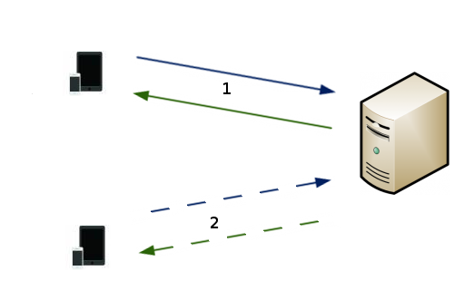
Le visiteur ayant un mobile pourra choisir la version qu'il veut.
Si le visiteur ne demande rien, le serveur lui renvoie la page par défaut.
Si le visiteur veut la version pour ordinateur, le serveur lui renvoie la page sans la balise <meta name="viewport">.
Pourquoi PHP ? Et bien tout simplement, parce que c'est le langage serveur gratuit le plus utilisé sur le Site du Zéro, et aussi le seul que je connaisse. :p
Alors allons-y !
La préparation
Je vais considérer que, comme vous utilisez PHP, vous utilisez également les includes. Il suffit d'avoir un fichier en-tete.php et menu.php, qui sont inclus dans chaque page. L'en-tête doit contenir la balise <head> pour mettre la balise <meta> et le menu servira juste à afficher le lien, mais vous pouvez bien sûr le mettre où vous voulez.
Également, je vous ai préparé quatre classes CSS qui peuvent être bien utiles :
La propriété display: inherit; permet d'utiliser ces classes sur n'importe quel élément, qui soit de type block ou inline.
Ainsi, vous pourrez facilement cacher ou afficher un élément sur les deux versions de votre site et les utiliser où bon vous semble !
Accéder à la version pour ordinateur
Alors tout simplement, on va afficher le lien sur la page :
<a href="?mobile=0" class="visible-phone">Accéder à la version pour ordinateur.</a>
Vous pouvez insérer ce lien où bon vous semble, y compris dans votre pied de page, lui appliquer des styles etc. Assurez vous quand même que le visiteur, avec ses gros doigts boudinés, puisse cliquer dessus avec un téléphone tactile.
Vous l'aurez deviné, on va, grâce à PHP, utiliser le paramètre qui sera présent dans l'url afin d'enlever la balise <meta>. On va également utiliser les sessions afin de conserver le choix de l'utilisateur. Voici le code que je vous propose :
<?php
if(isset($_GET['mobile'])) /* Si on a un paramètre dans l'url */
{
$_SESSION['mobile']=$_GET['mobile'];
}
elseif(!isset($_SESSION['mobile'])) /* Et si on a auparavant pas utilisé la variable, on l'initialise */
{
$_SESSION['mobile']=1;
}
if($_SESSION['mobile']==1){?>
<meta name="viewport" content="width=device-width, maximum-scale=1"/>
<?php }?>
A la ligne 7, tu écris <?php if(!isset()). Pourquoi tu n'as pas mis à la place <?php if(empty()) ?
Et bien tout simplement parce que isset() et empty() ne sont pas exactement opposées !
isset()
empty()
Citation : Documentation
Valeurs de retour
Retourne TRUE si var existe et a une valeur autre que NULL, FALSE sinon.
Citation : Documentation
Valeurs de retour
Retourne FALSE si var a une valeur non-vide et différente de zéro.
Ce qui suit est considéré comme étant vide :
"" (une chaîne vide)
0 (0 en tant qu'entier)
0.0 (0 en tant que nombre à virgule flottante)
"0" (0 en tant que chaîne de caractères)
NULL
FALSE
array() (un tableau vide)
var $var; (une variable déclarée, mais sans valeur dans une classe)
Comme vous le voyez, la fonction empty() considère beaucoup plus de valeurs, y compris le 0 ! Or, comme on utilise le 0 dans le paramètre de l'URL, on est obligés d'utiliser <?php if(!isset()).
Revenir à la version mobile
Pour cela, il suffit de créer comme tout à l'heure un lien. Cependant, cette fois-ci, on ne va pas l'afficher tout le temps sur la version pour ordinateur. En fait, il faut réfléchir et se poser la question suivante : Quand devons-nous afficher le lien ? La réponse est quand on a demandé, depuis un mobile, d'avoir la version desktop ET qu'on affiche bien la version desktop. Solution : avec une condition en PHP sur la variable session, on s'assure qu'on n'affiche le code uniquement pour ceux qui l'ont demandé, et avec la classe .visible-desktop, on remplit la deuxième condition.
<?php if($_SESSION['mobile']==0){?>
<a href="?mobile=1" class="visible-desktop">Revenir à la version mobile.</a>
<?php } ?>
Et voilà, c'est déjà fini ! La condition que l'on a mis dans l'en-tête nous permet de rechanger à loisir la valeur de la variable session.
Faites comme moi et rajoutez cette fonctionnalité au TP précédent ! Ainsi, depuis un appareil mobile, vous pourrez directement vérifier comment ce code marche exactement.
Vous trouvez que vos menus prennent trop de place ? Vous ne savez pas comment les agencer pour qu'ils soient discrets mais utilisables ? On va maintenant voir, grâce à Javascript, comment remédier à ce problème.
Le but de cette partie est d'empêcher le menu de prendre trop de place, afin que notre visiteur trouve tout de suite, ou en tout cas plus rapidement les informations qu'il cherche. Je vous propose un aperçu de ce que nous (vous !) allons réaliser :
Bon, c'est moche, mais libre à vous de faire mieux que moi ! De plus, il est courant de mettre le lien vers la version ordinateur tout au bas de la page ; c'est à vous de voir. Je vous donne le code que j'ai utilisé pour ce résultat, le but n'est pas de perdre du temps là-dessus maintenant :
<!-- Dans le header -->
<a class="btn btn-navbar" id="btnMenu">
<span class="icon-bar"></span>
<span class="icon-bar"></span>
<span class="icon-bar"></span>
</a>
<!-- J'ai aussi ajouté un id à la balise <nav> -->
.btn {
display: inline-block;
cursor: pointer;
}
.btn-navbar {
display: none;
float: right;
padding: 12px 15px;
margin-right: 5px;
margin-left: 5px;
}
.icon-bar {
display: block;
width: 18px;
height: 3px;
background-color: #CECECE;
-webkit-border-radius: 1px; /* Ce sont des préfixes, pour que les navigateurs */
-moz-border-radius: 1px; /* prennent en charge les nouvelles propriétés. */
border-radius: 1px;
}
.icon-bar + .icon-bar { /* Le + permet de sélectionner les éléments qui suivent */
margin-top: 3px;
}
Et il ne faut pas oublier de cacher le menu en-dessous de 600px, lorsqu'on change sa présentation, avec display: none;.
Place au JavaScript pour afficher/cacher ce menu !
Le javascript permet d'avoir de l'interactivité dans vos pages HTML. Maintenant, presque tous les appareils gèrent correctement le JS, donc il n'y a normalement pas de problèmes pour l'utiliser sur votre site. Si vous souhaitez l'apprendre, rendez-vous sur le tutoriel officiel du Site du Zéro sur le JavaScript.
Comme ce tutoriel ne concerne pas le JS, je vais directement vous donner ma solution (qui n'est pas unique) :
window.onload=function(){
var bouton = document.getElementById('btnMenu');
var nav = document.getElementById('nav');
bouton.onclick = function(e){
if(nav.style.display=="block"){
nav.style.display="none";
}else{
nav.style.display="block";
}
};
};
Avec des frameworks
Les frameworks JS vous permettent de grandement simplifier votre code et de ne pas vous préoccuper des compatibilités entre les navigateurs (entre autres). Il en existe beaucoup, mais je ne vais vous présenter que ceux que je connais.
jQuery
jQuery est peut-être le framework JS le plus utilisé. Si vous souhaitez vous y initier, vous avez le choix dans les tutoriels : parmi ceux assez complets, il y a celui de MichelMartin et celui de Nassoub et Sainior, tous deux très réussis.
De même, je vais vous donner directement le code puisque je ne souhaite rien vous apprendre ici :
Bien que ce soit de plus en plus rare, une bonne habitude à prendre est de toujours penser aux visiteurs ayant désactivé JavaScript. Pour cela, dans notre cas, rien de plus simple, même si ça peut être parfois problématique.
Ici, tout simplement, on va ajouter une ancre à notre lien :
Ainsi, il nous suffit de rajouter à la fin de notre page (à la fin de notre <footer>), un deuxième menu ! Et pour qu'il ne s'affiche pas pour les visiteurs qui n'en n'ont pas besoin, on va l'entourer d'une balise <noscript> :
Il ne faut pas oublier qu'on ne veut l'afficher que sur un petit écran, plus petit que 600px (Je vous laisse faire, vous avez compris depuis le temps !).
Et maintenant, on a un problème avec le JS ! En effet, lorsqu'on clique pour dérouler le menu avec JavaScript activé, on est quand même redirigé vers #noscriptMenu, or on veut empêcher ce comportement.
Et bien tout simplement, avec le paramètre qu'on envoie à la fonction lors du clic, on annule le comportement par défaut :
e.preventDefault();
Cette courte partie sur JavaScript n'aura normalement pas été très difficile, néanmoins n'oubliez jamais de penser à tout ! :p
Je ne vous en ai pas parlé parce que je ne m'y connais pas assez, mais sachez qu'avec CSS3, vous pouvez faire des transitions, sélectionner un élément avec une ancre, etc... Je vous laisse découvrir tout ça : sélection, transitions... Vous n'aurez peut-être même pas besoin de JavaScript ! ;)
Et voilà, c'est fini ! Votre site est tout beau, tout propre, et votre ami(e) peut aller le voir depuis un smartphone (ou même une tablette ;) ) !
Bon codage à tous ! :D
Remerciements
Aux bêta-testeurs, qui m'ont encouragé à continuer ce tutoriel ;
Aux lecteurs, dont les commentaires m'ont fait plaisir et m'ont appris de nouvelles choses ;
À Spader, qui m'a permis de concevoir un cours qui tient la route ;
Et bien sûr à M@teo21, créateur du site, sans qui je ne connaîtrait même pas les rudiments des sites internets.